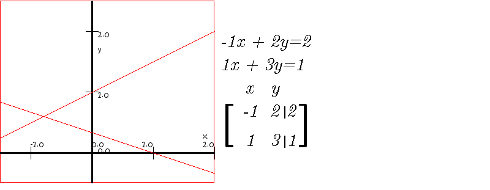
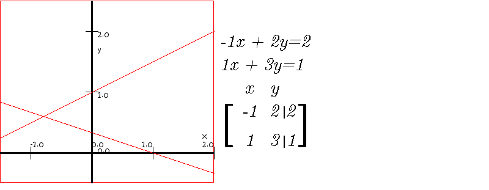
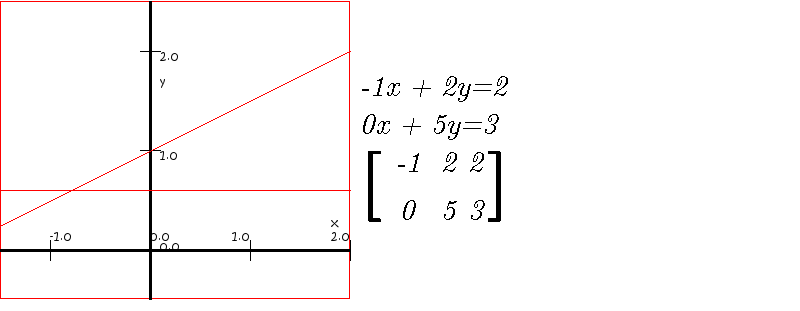
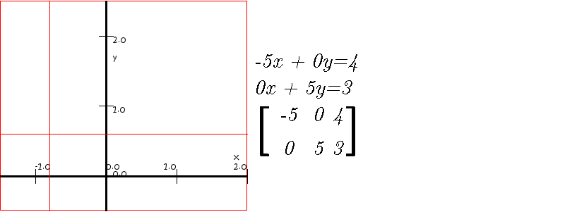
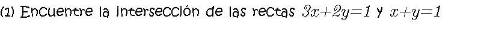
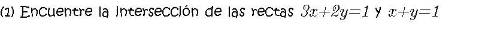

Cada ecuación lineal representa una recta. Usualmente dos rectas se intersecan en un punto. Ahora veremos cómo obtener dicho punto.
 

Al sumar las dos ecuaciones se elimina la variable x
Al sumar cinco veces la primera ecuación con dos veces la segunda ecuaciones se elimina la variable y
 
Comentarios y sugerencias: gmunoz@udistrital.edu.co

Comentarios y sugerencias: gmunoz@udistrital.edu.co